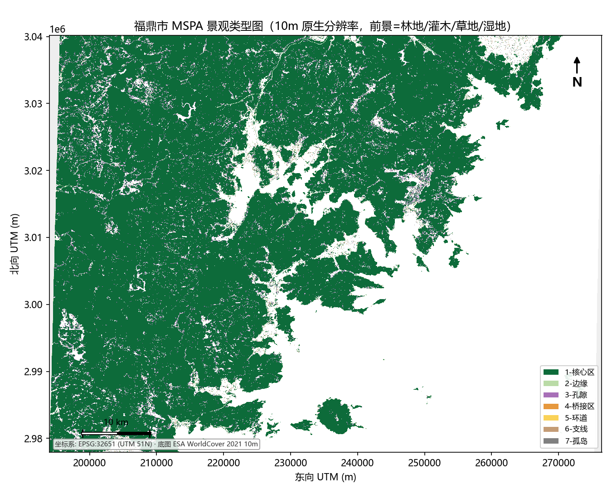
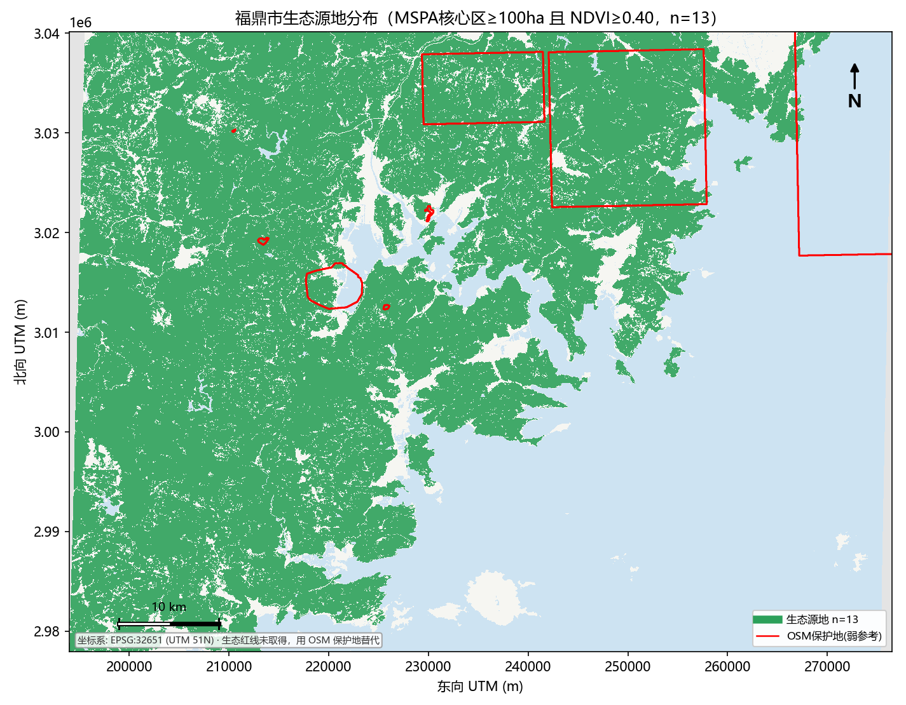
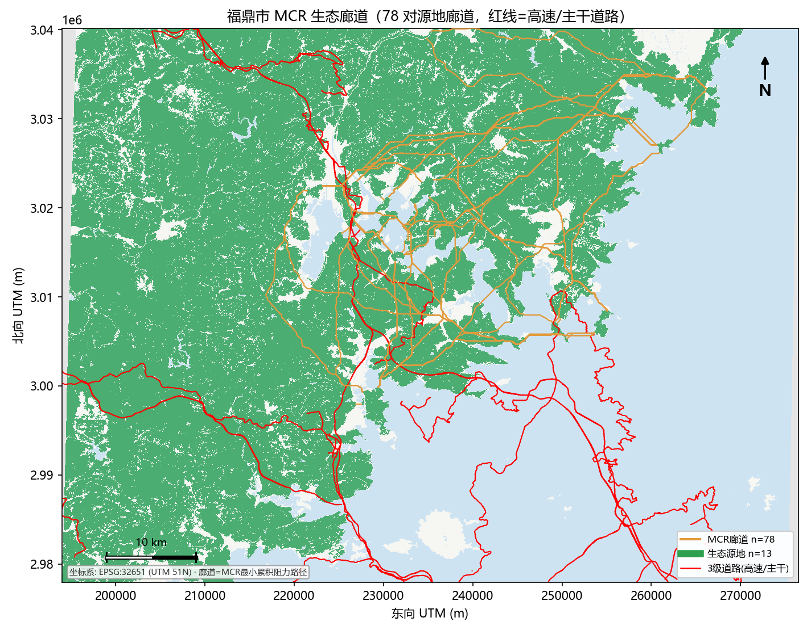
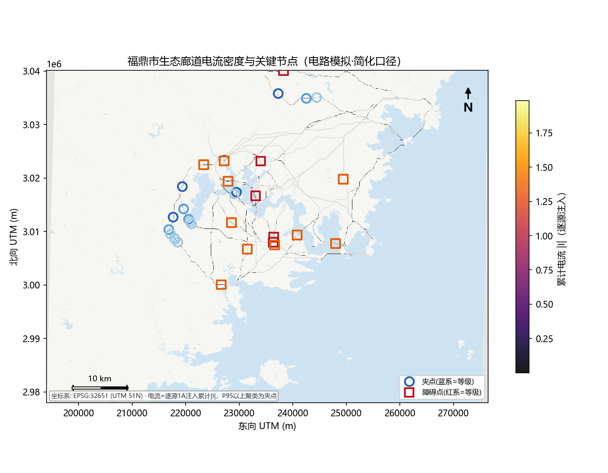
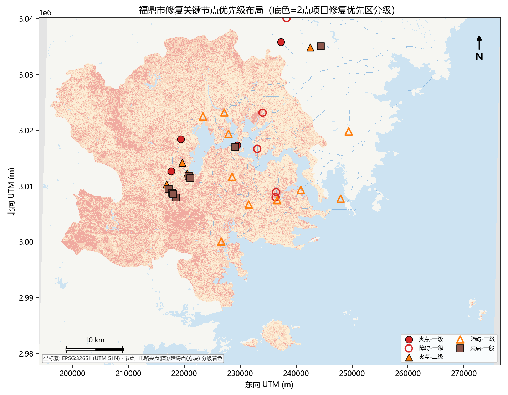

生态安全格局作品集 · ECOLOGICAL NETWORK PORTFOLIO
福鼎市生态网络构建与修复关键节点识别
MSPA 形态学源地 → 五因子阻力面 → MCR 廊道 → 廊道网络电路模拟 → 修复优先级决策表 · 与姊妹项目《生态修复优先区》同底座互证
Python 3.13
rasterio · scipy · pyproj
MSPA / Dijkstra / 电路模拟 全自研
每个数字可溯源 results/tables/*.json
全流程确定性 · 逐位可复现
一、流水线一览
研究区福鼎市（闽浙交界，陆域 1611 km²），30m 分析网格 2748×2074（EPSG:32651）。
MSPA 形态学、虚拟超级源 Dijkstra、稀疏线性系统电路模拟均为手写实现，可逐行讲解；
全部输出数字由 JSON 取数自动写进报告，杜绝"手抄数字"。
MSPA 源地10m 原生分辨率七分类
核心 ≥100ha + NDVI≥0.40
→
阻力面5 因子 max 融合
low/high 敏感性双方案
→
MCR 廊道560 万节点稀疏图
虚拟超级源 Dijkstra ×78 对
→
电路节点 ★逐源 1A 注入 · spsolve
夹点 P95 + 恢复增量障碍点
→
修复优先级节点×优先区×措施
31 节点决策表
关键工程结论：MSPA 不能用 30m-mode 聚合跑——mode 投票会把窄谷"吞掉"造成假连通
（核心区虚占前景 88%、桥接=0）；换 10m 原生分辨率后破碎化真实呈现。
另：scipy CSR 稀疏加法会削掉显式 0 权边，让虚拟源变孤岛全场 inf——边权加 ε=1e-3 才通。
二、成果图

图 1 · MSPA 七类景观类型（10m 原生分辨率）。前景=林地/灌木/草地/湿地：
核心区 2612.8 km² 占前景 94.5%，边缘/孔隙/支线/孤岛按形态学七类划分；
桥接与环道为 0 系 WorldCover 将茶园归树冠覆盖、山地县森林天然连片——破碎化体现在阻力面（局限已如实报告）。

图 2 · 生态源地。13 个源地呈"两大核心 + 11 卫星"格局：
2 个巨型（182,614 ha 含太姥山、69,237 ha）+ 11 个卫星斑块（100~984 ha），
NDVI 0.648~0.79 全部健康，2 处与 OSM 保护地相交。

图 3 · MCR 生态廊道 ×78 对（橙线）与高速/主干道路（红线）。
总长 1512.8 km（平均 19.4 km，最长 59.2 km），穿越地类以林地 81.7% 为主；
廊道与道路的交锋带即阻力热点。敏感性：道路/居民点阻力 ×0.5/×2 后同对廊道 90m 缓冲
Jaccard 重合率 0.423/0.412——骨架稳、线位随阻力参数可动。

图 4 · 廊道网络电流密度与关键节点。在 18163 节点廊道网络上逐源注入 1A、
其余源地接地，spsolve 解稀疏电压场：累计电流（逐源注入）越大=生态流越"必经"。
电流 P95 聚类为 16 夹点（蓝圈，蓝深=等级高）；恢复增量法得 15 障碍点（红方块）——
耕地/建成区窗口恢复成林地后重算 MCR，最高单点增益 51.5%。

图 5 · 修复优先级布局（底色=姊妹项目修复优先区分级）。
31 个节点按"节点等级 × 姊妹项目优先区 × 障碍增益 × 退化度 × 保护地邻近"打分排序，
5/31 命中姊妹项目一级优先区——"面"上诊断与"线点"上方案空间互证；
措施决策表：道路节点→动物通道改造，农地/茶园节点→缓冲带改造，裸地→客土复绿，滨海湿地→退养还湿。
三、方法要点
3.1 MSPA 为什么用 10m 原生分辨率
做过 30m-mode 对比实验：众数聚合把窄谷像元"投票吞掉"，核心区虚占前景 88%、桥接=0——
假连通会直接决定廊道布局。MSPA 看形态细节必须用原生分辨率；MCR 要算力才降到 30m
（源地是面状对象，众数重采样不丢拓扑）。Python 形态学与 Guidos 的简化差异逐条列出（3×3 结构元/边缘 1 像元），
源地只取"核心区"类——该类与 Guidos 一致性最高。
3.2 阻力面：max 融合而不是加权求和
五因子（土地利用+坡度+道路+居民点+水系）取 max：求和会让"极端障碍"被其他低阻力稀释，
max 保守且可解释（最差一票否决）。道路做指数衰减场（路面 400，λ=300m 衰减到背景）。
阻力值逐条标注依据：文献锚点（林地 1 / 建成区 100）+ 经验值（耕地 30 等），并用 low/high 敏感性量化影响。
3.3 电路理论：廊道网络简化口径（保守方向）
全景观 Circuitscape 需要解 560 万节点线性系统，算力不够；改为在已提取的廊道网络上模拟——
夹点位置偏保守（漏报比虚报安全），如实写进局限。夹点="现状生态流瓶颈"（保住它、防切割），
障碍点="修复收益最大位置"（改造它、促恢复）——一个防退化、一个促恢复，措施不同。
四、优点与局限
- 优点：MSPA/Dijkstra/电路模拟全自研可逐行讲解；每个数字可溯源 JSON；
全流程确定性无随机数；敏感性双方案量化经验值风险；与姊妹项目优先区空间互证。
- 局限：WorldCover 园地口径致桥接=0、滩涂源地缺失（有三调应重跑）；电路为廊道网络简化口径；
阻力值多为经验值；连通性≠工程可行性；无野外验证（下一步：20~30 验证点实地核查）。